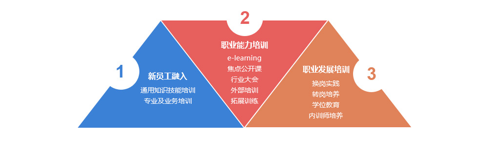
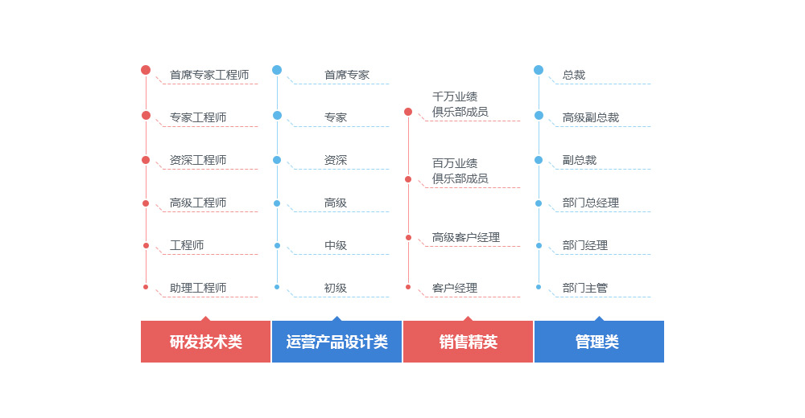

焦点科技十分注重员工的学习与提升，建立了非常完备的培养体系：
1）通用知识技能培训：为了帮助新员工尽快熟悉公司环境和文化，适应职场工作氛围，我们为其准备了企业文化、工作平台、职业素养职场礼仪等课程培训。
2）专业及业务培训：我们还为新员工准备了岗位专业技能培训，帮助大家快速上手岗位工作。
1）E-learning：我们为每位员工精心设置了丰富的在线学习课程，海量培训资源满足大家多方面的学习需求。
2）焦点公开课：挖掘内外部资源，从专业、业务、通用、管理等多个方向，推出关注业务产出的精品培训项目。
3）行业大会：不定期邀请行业内著名专家和业界人士到公司开展交流活动；
4）外部培训：公司根据岗位职责需要，定期组织优秀员工参加专业领域的外部培训机构的课程。
5）拓展训练：背摔、攀岩、真人CS、断桥、徒步拓展……
6）管理人员培训：针对不同级别的管理人员展开针对性的培训，以满足不同人群在管理技能、团队建设、职业发展方面的需求。
1）换岗实践：为鼓励和支持员工提升，培养有发展潜力的复合型人才，激励员工，拓展职业宽度，提高职业竞争力。
2）转岗培养：给员工提供更多的发展空间和机遇。
3）学位教育：公司与南京大学等著名高校建立长期合作平台，符合条件的员工可参加硕士学历、学位教育，公司报销相应费用。
4）内训师培养：挖掘内部业务专家，为业务经验的传承和人才队伍培养提供充分的支持。
在新人的成长期，我们会安排资深员工对新人进行一对一的全程辅导、帮带和陪伴。
导师根据新人的实际情况对其成长进行规划，并对新人的日常工作进行指导，帮助新人快速适应岗位工作。
焦点为员工提供专业和管理双向职业发展通道，提供从入职到晋升全方位的职业发展规划和培训。
 未经51job.com 同意，不得转载本网站之所有招聘信息及作品；无忧工作网版权所有©1999- 2017
未经51job.com 同意，不得转载本网站之所有招聘信息及作品；无忧工作网版权所有©1999- 2017